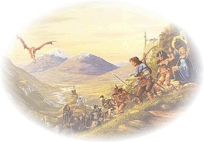
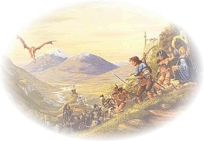

O Stránkách
Tato stránka vznikla pro úspěšný absolvování předmětu 4IZ268 a také pro můj osobní projekt - vývoj staré nostalgické hry: Ultima Online. Cílem stránek je popsat status, vývoj a správu hry Ultima Online na shardu Andarie.
Tato stránka vznikla pro úspěšný absolvování předmětu 4IZ268 a také pro můj osobní projekt - vývoj staré nostalgické hry: Ultima Online. Cílem stránek je popsat status, vývoj a správu hry Ultima Online na shardu Andarie.
